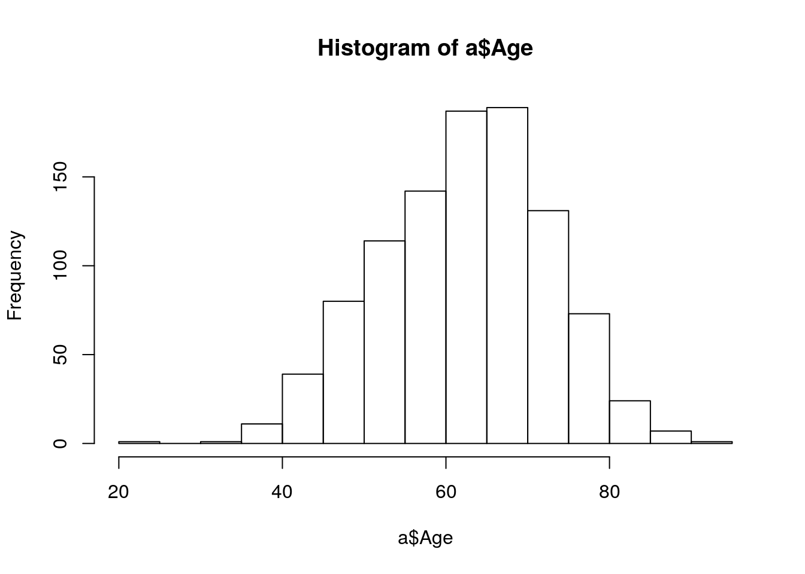
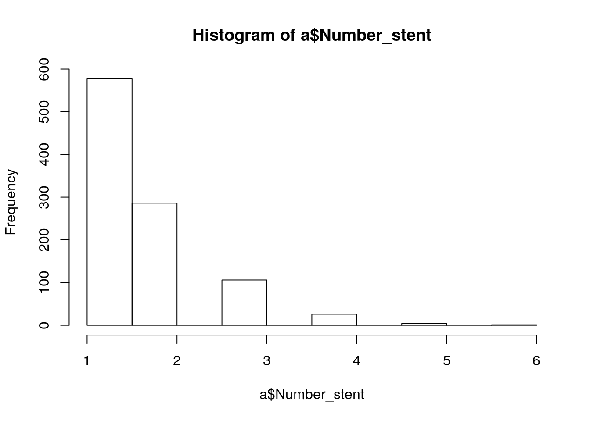

R 의학통계: 삼성서울병원(1)
R 기초 문법 및 Table 1만들기
시작하기 전에
본 강의는 R과 Rstudio 의 설치과정은 생략한다. 혹시 설치를 하지 못하였다면 http://www.r-project.org/ 와 http://www.rstudio.com/ 를 참조하여 설치하길 바란다. R에 대한 전반적인 도움말은 help.start() 명령어를 활용하면 되고 함수 별 도움말을 보려면 help(which) 와 같이 실행하면 된다.
본 강의의 목표
R의 이용능력을 대략적으로 다음과 같이 분류할 수 있다.
- 데이터 정리는 excel로 미리 다 해놓고 통계만 R로 수행.
- 데이터 정리와 통계 분석.
- R로 그림을 그린다.
- 논문에 들어갈 테이블과 그림을 R에서..
- 논문 시작부터 끝까지 R로만..
본 강의에서는 데이터 정리는 엑셀에서 한다고 가정한 후 R에서 분석을 수행하는 것을 목표로 할 것이다. 실습데이터는 여기에서 다운받을 수 있으며 R코드 파일은 여기에서 다운받을 수 있다.
R 기초연산 : 벡터(vector)
R 의 기본 연산 단위는 벡터이며 x=c(1,2,3) 이라고 쓰면 1,2,3 으로 이루어진 길이 3인 벡터를 x에 저장하는 것이다. 기타 연산은 직접 실습으로 알아보자.
x=c(1,2,3,4,5,6) ## vector of variable
y=c(7,8,9,10,11,12)
x+y ## [1] 8 10 12 14 16 18x*y## [1] 7 16 27 40 55 72sqrt(x)## [1] 1.000000 1.414214 1.732051 2.000000 2.236068 2.449490sum(x)## [1] 21sum(x>=4) ## No sum, number## [1] 3diff(x) ## [1] 1 1 1 1 1mean(x)## [1] 3.5sd(x)## [1] 1.870829max(x)## [1] 6max(x,y)## [1] 12length(x)## [1] 6x[2]## [1] 2x[-2] ## [1] 1 3 4 5 6x[1:3]## [1] 1 2 3x[c(1,3,4,5,6)]## [1] 1 3 4 5 6x[c(1,2,3)]## [1] 1 2 3벡터만들기
이번에는 벡터를 생성하는 다양한 방법들을 예시를 통해 배워보도록 한다.
## Sequence
v1=seq(-5,5,by=.2); v1 ## [1] -5.0 -4.8 -4.6 -4.4 -4.2 -4.0 -3.8 -3.6 -3.4 -3.2 -3.0 -2.8 -2.6 -2.4
## [15] -2.2 -2.0 -1.8 -1.6 -1.4 -1.2 -1.0 -0.8 -0.6 -0.4 -0.2 0.0 0.2 0.4
## [29] 0.6 0.8 1.0 1.2 1.4 1.6 1.8 2.0 2.2 2.4 2.6 2.8 3.0 3.2
## [43] 3.4 3.6 3.8 4.0 4.2 4.4 4.6 4.8 5.0## Repeat
v2=rep(1,3); v2## [1] 1 1 1v3=rep(c(1,2,3),2); v3 ## Repeat for vector## [1] 1 2 3 1 2 3v4=rep(c(1,2,3),each = 2); v4 ## Repeat for vector : each## [1] 1 1 2 2 3 3for, if, else, ifelse 문
마찬가지로 예시를 통해 배워보자.
## for loop
for (i in 1:3){
print(i)
}## [1] 1
## [1] 2
## [1] 3i=0
for (j in c(1,2,4,5,6)){
i=i+j
}
i## [1] 18## if
x=5
if (x >=3 ){
x=x+3
}
x## [1] 8x=5
if (x >=10){
print("High")
} else if (x >=5){
print("Medium")
} else {
print("Low")
} ## if, else if 주의: 반드시 } 와 같은 줄에 위치하도록.## [1] "Medium"## ifelse
x=5
y=ifelse(x==5,"OK","Suck") ## ifelse(조건,참일때,거짓일때)
y## [1] "OK"함수 만들기
기초수준에서는 함수를 만들어 쓸일이 거의 없을 것이다. 그러나 평균, 분산 등을 구할 때 결측치가 있으면 R은 NA를 출력하는 문제점이 있어 이를 해결하기 위해서라도 기본적인 함수 만드는 법은 알고 있는 것이 좋다. 예제를 통해 살펴보자.
x=c(1:10,12,13,NA,NA,15,17) ## 결측치가 포함되어 있다면..
mean(x)## [1] NAmean0=function(x){
mean(x,na.rm=T)
} ## x에 대한 함수이며 mean함수에 na.rm 옵션을 TRUE로 해두었다. default는 F
mean0=function(x){mean(x,na.rm=T)} ## 한줄에 쓸 수도 있다.
mean0(x)## [1] 8하나 이상의 변수를 포함한 함수도 다음과 같이 만들 수 있다.
twomean=function(x1,x2){
a=(x1+x2)/2
a
}
twomean(4,6)## [1] 5데이터 불러오기 & 저장하기.
이제부터는 실제 데이터를 읽어서 그 데이터를 매니징 하는 방법을 배워보도록 하겠다.
디렉토리 지정
데이터를 불러오기 전에 미리 디렉토리를 지정하면 그 다음부터는 편하게 읽고 쓸 수 있다.
#getwd() ## 현재 디렉토리
#setwd("/home/secondmath/Dropbox/Hompage/mathemedicine.github.io") ## 디렉토리 설정
#setwd("C:/Users/sec/Desktop/Language/r/edu")
getwd()## [1] "/home/secondmath/Dropbox/Hompage/jinseob2kim.github.io"여기서 주의해야 할 점은 폴더간의 구분을 / 로 해야 한다는 점이다. R 은 유닉스 기반의 언어이기 때문이다. 이제 실습 데이터를 읽어보도록 하자. 가급적이면 데이터포맷은 csv로 통일하는 것을 추천한다. 콤마로 분리된 가장 간단 한 형태의 파일로서 용량도 작고 어떤 소프트웨어에서도 읽을 수 있다는 장점이 있다. 물론 R에서 SPSS, SAS, Excel파일을 읽을 수도 있지만 본 실습에서는 생략하도록 하겠다.
a=read.csv("smc_example.csv") ## 첫번째 행은 변수명으로 자동 인식
a=read.table("smc_example.csv", sep=",", header=T) ## 구분자와 첫번째 행 인식여부를 직접
head(a) ## 처음 6행 보기## Patient_ID Sex Age Height Weight BMI DM HTN Smoking MACCE Death
## 1 22095995 M 52 160 63 24.60938 0 1 1 0 0
## 2 26848489 M 67 162 63 24.00549 1 1 0 0 0
## 3 3738312 M 75 163 63 23.71184 1 1 0 0 0
## 4 14676241 F 66 154 61 25.72103 0 0 0 0 0
## 5 18426462 M 52 165 64 23.50781 0 1 0 0 0
## 6 12687805 M 56 166 70 25.40282 1 1 1 0 0
## MACCE_date Death_date STRESS_EXIST Number_stent
## 1 1056 1056 No test 3
## 2 270 270 No test 2
## 3 1875 1875 No test 2
## 4 2112 2112 Test 1
## 5 2052 2052 No test 2
## 6 792 792 No test 1저장도 csv로 하는 것을 추천하며 실습도 이것만 하겠다.
write.csv(a,"smc_example1.csv")
write.csv(a,"smc_example1.csv",row.names=F) ## 행번호 삭제 읽은 데이터 살펴보기
이제부터는 본격적으로 읽은 데이터를 살펴보도록 하겠다. 실습데이터는 심장질환 환자의 정보를 포함하고 있다.
head(a) ## 처음 6행## Patient_ID Sex Age Height Weight BMI DM HTN Smoking MACCE Death
## 1 22095995 M 52 160 63 24.60938 0 1 1 0 0
## 2 26848489 M 67 162 63 24.00549 1 1 0 0 0
## 3 3738312 M 75 163 63 23.71184 1 1 0 0 0
## 4 14676241 F 66 154 61 25.72103 0 0 0 0 0
## 5 18426462 M 52 165 64 23.50781 0 1 0 0 0
## 6 12687805 M 56 166 70 25.40282 1 1 1 0 0
## MACCE_date Death_date STRESS_EXIST Number_stent
## 1 1056 1056 No test 3
## 2 270 270 No test 2
## 3 1875 1875 No test 2
## 4 2112 2112 Test 1
## 5 2052 2052 No test 2
## 6 792 792 No test 1R은 결측치를 NA 로 표시한다.
tail(a) ## 마지막 6행## Patient_ID Sex Age Height Weight BMI DM HTN Smoking MACCE Death
## 995 15538935 F 63 154 52 21.92613 1 1 0 1 0
## 996 10960036 M 70 170 74 25.60554 1 1 0 1 0
## 997 15359626 M 78 165 49 17.99816 0 1 0 1 1
## 998 12032508 M 70 165 72 26.44628 0 0 0 1 0
## 999 9876962 F 68 153 56 23.92242 0 0 0 1 0
## 1000 17882089 M 71 165 54 19.83471 1 1 0 1 1
## MACCE_date Death_date STRESS_EXIST Number_stent
## 995 1198 2379 Test 1
## 996 392 1861 No test 1
## 997 413 413 No test 2
## 998 499 2031 Test 2
## 999 1695 2053 No test 1
## 1000 76 257 No test 1names(a) ## 변수명## [1] "Patient_ID" "Sex" "Age" "Height"
## [5] "Weight" "BMI" "DM" "HTN"
## [9] "Smoking" "MACCE" "Death" "MACCE_date"
## [13] "Death_date" "STRESS_EXIST" "Number_stent"a$BMI[1:10] ## BMI변수의 처음 10개 행만.. ## [1] 24.60938 24.00549 23.71184 25.72103 23.50781 25.40282 23.30905
## [8] 23.72529 26.15933 23.01118dim(a) ## 행갯수, 열갯수## [1] 1000 15nrow(a) ## 행## [1] 1000ncol(a) ## 열 ## [1] 15class(a) ## 클라스. 일단 data.frame이라는 정도만 알고 넘어가자.## [1] "data.frame"str(a) ## 데이터 구조 살펴보기 ## 'data.frame': 1000 obs. of 15 variables:
## $ Patient_ID : int 22095995 26848489 3738312 14676241 18426462 12687805 18188715 4456864 14618335 23304153 ...
## $ Sex : Factor w/ 2 levels "F","M": 2 2 2 1 2 2 1 1 1 1 ...
## $ Age : int 52 67 75 66 52 56 67 65 68 45 ...
## $ Height : int 160 162 163 154 165 166 155 155 145 156 ...
## $ Weight : num 63 63 63 61 64 70 56 57 55 56 ...
## $ BMI : num 24.6 24 23.7 25.7 23.5 ...
## $ DM : int 0 1 1 0 0 1 0 1 0 0 ...
## $ HTN : int 1 1 1 0 1 1 1 0 1 0 ...
## $ Smoking : int 1 0 0 0 0 1 0 0 0 0 ...
## $ MACCE : int 0 0 0 0 0 0 0 0 0 0 ...
## $ Death : int 0 0 0 0 0 0 0 0 0 0 ...
## $ MACCE_date : int 1056 270 1875 2112 2052 792 2171 1210 2437 1078 ...
## $ Death_date : int 1056 270 1875 2112 2052 792 2171 1210 2437 1078 ...
## $ STRESS_EXIST: Factor w/ 2 levels "No test","Test": 1 1 1 2 1 1 1 1 2 1 ...
## $ Number_stent: int 3 2 2 1 2 1 3 1 1 1 ...summary(a) ## 대략적인 요약.## Patient_ID Sex Age Height
## Min. : 7419 F:254 Min. :21.0 Min. : 99.0
## 1st Qu.: 7723744 M:746 1st Qu.:56.0 1st Qu.:158.0
## Median :15435939 Median :63.0 Median :165.0
## Mean :14272770 Mean :62.8 Mean :163.4
## 3rd Qu.:20308317 3rd Qu.:70.0 3rd Qu.:170.0
## Max. :27116710 Max. :93.0 Max. :190.0
## Weight BMI DM HTN
## Min. : 36.00 Min. : 14.33 Min. :0.000 Min. :0.000
## 1st Qu.: 60.00 1st Qu.: 23.05 1st Qu.:0.000 1st Qu.:0.000
## Median : 67.00 Median : 24.55 Median :0.000 Median :1.000
## Mean : 67.13 Mean : 38.35 Mean :0.394 Mean :0.626
## 3rd Qu.: 74.00 3rd Qu.: 26.50 3rd Qu.:1.000 3rd Qu.:1.000
## Max. :102.00 Max. :999.00 Max. :1.000 Max. :1.000
## Smoking MACCE Death MACCE_date
## Min. :0.000 Min. :0.000 Min. :0.000 Min. : 1
## 1st Qu.:0.000 1st Qu.:0.000 1st Qu.:0.000 1st Qu.: 636
## Median :0.000 Median :0.000 Median :0.000 Median :1248
## Mean :0.265 Mean :0.223 Mean :0.059 Mean :1353
## 3rd Qu.:1.000 3rd Qu.:0.000 3rd Qu.:0.000 3rd Qu.:2013
## Max. :1.000 Max. :1.000 Max. :1.000 Max. :3502
## Death_date STRESS_EXIST Number_stent
## Min. : 1.0 No test:603 Min. :1.000
## 1st Qu.: 872.8 Test :397 1st Qu.:1.000
## Median :1518.5 Median :1.000
## Mean :1568.2 Mean :1.597
## 3rd Qu.:2211.2 3rd Qu.:2.000
## Max. :3502.0 Max. :6.000a$BMI
a[,"BMI"]
a[,11]
#a[1:7] ## 이러면 안된다. ","로 행인지 열인지 구분을 해 줘야.
a[,1:7] ## 1열부터 7열까지.
a[,c(1,2,3,4,5,6,7)]
a[,seq(1,7)]
a[,c("Patient_ID","Sex", "Age" , "Height" ,"Weight","BMI","DM")] ## 변수명으로도 가능
a[,names(a)[1:7]] ## Samelength(a$BMI)## [1] 1000a[2,11] ## 2행 11열## [1] 0a[2,] ## 11행## Patient_ID Sex Age Height Weight BMI DM HTN Smoking MACCE Death
## 2 26848489 M 67 162 63 24.00549 1 1 0 0 0
## MACCE_date Death_date STRESS_EXIST Number_stent
## 2 270 270 No test 2mean(a$BMI) ## 결측치 없을 때만..## [1] 38.34696mean(a$BMI,na.rm=T) ## 결측치 빼고## [1] 38.34696round(mean(a$BMI,na.rm=T),2) ## 반올림 ## [1] 38.35mean(a[,6],na.rm=T)## [1] 38.34696sd(a$BMI,na.rm=T) ## 표준편차## [1] 114.563var(a$BMI,na.rm=T) ## 분산## [1] 13124.68median(a$BMI,na.rm=T) ## 중간값## [1] 24.54836IQR(a$BMI,na.rm=T) ## 25%-75% range## [1] 3.452783quantile(a$BMI, na.rm=T) ## quantile## 0% 25% 50% 75% 100%
## 14.32507 23.05175 24.54836 26.50454 999.00000max(a$BMI,na.rm=T) ## Max## [1] 999min(a$BMI,na.rm=T) ## Min## [1] 14.32507tb=table(a$Sex,a$STRESS_EXIST)
tb ## Table ##
## No test Test
## F 162 92
## M 441 305prop.table(tb) ## Proportion##
## No test Test
## F 0.162 0.092
## M 0.441 0.305prop.table(tb,1) ## By Row##
## No test Test
## F 0.6377953 0.3622047
## M 0.5911528 0.4088472prop.table(tb,2) ## By Col##
## No test Test
## F 0.2686567 0.2317380
## M 0.7313433 0.7682620기타: 다양한 조건문 활용
이번에는 연속형 변수인 BMI변수를 예시로 우리가 원하는 조건에 해당하는 정보를 뽑아내는 것을 연습해 보겠다.
mean(a$BMI)## [1] 38.34696cut= a$BMI >=25 ## TRUE of FALSE
table(cut) ## cut
## FALSE TRUE
## 570 430rows=which(a$BMI >= 25) ## row numbers
head(rows) ## [1] 4 6 9 11 12 13values=a$BMI[a$BMI>=25] ## Values
head(values)## [1] 25.72103 25.40282 26.15933 25.95156 25.84777 25.52964length(values)## [1] 430BMI_old_and=(a$BMI>=25 & a$Age >= 50) ## and
BMI_old_or=(a$BMI>=25 | a$Age >= 50) ## or
table(BMI_old_and)## BMI_old_and
## FALSE TRUE
## 625 375table(BMI_old_or)## BMI_old_or
## FALSE TRUE
## 62 938stent123 = (a$Number_stent %in% c(1,2,3)) ## %in%
table(stent123,a$Number_stent)##
## stent123 1 2 3 4 5 6
## FALSE 0 0 0 26 4 1
## TRUE 577 286 106 0 0 0기초통계 : 그룹비교
연속변수 비교: 2 그룹
2그룹의 평균값을 비교하는 가장 대표적인 방법으로는 t-test가 있다.

## t.test
t.test(a$Age ~ a$STRESS_EXIST)##
## Welch Two Sample t-test
##
## data: a$Age by a$STRESS_EXIST
## t = 4.0357, df = 922.2, p-value = 5.896e-05
## alternative hypothesis: true difference in means is not equal to 0
## 95 percent confidence interval:
## 1.330869 3.850637
## sample estimates:
## mean in group No test mean in group Test
## 63.82753 61.23678t.test(a[,"Age"] ~ a[,"STRESS_EXIST"])##
## Welch Two Sample t-test
##
## data: a[, "Age"] by a[, "STRESS_EXIST"]
## t = 4.0357, df = 922.2, p-value = 5.896e-05
## alternative hypothesis: true difference in means is not equal to 0
## 95 percent confidence interval:
## 1.330869 3.850637
## sample estimates:
## mean in group No test mean in group Test
## 63.82753 61.23678t.test(a[,3]~a[,14])##
## Welch Two Sample t-test
##
## data: a[, 3] by a[, 14]
## t = 4.0357, df = 922.2, p-value = 5.896e-05
## alternative hypothesis: true difference in means is not equal to 0
## 95 percent confidence interval:
## 1.330869 3.850637
## sample estimates:
## mean in group No test mean in group Test
## 63.82753 61.23678tt=t.test(Age~STRESS_EXIST,data=a)
tt##
## Welch Two Sample t-test
##
## data: Age by STRESS_EXIST
## t = 4.0357, df = 922.2, p-value = 5.896e-05
## alternative hypothesis: true difference in means is not equal to 0
## 95 percent confidence interval:
## 1.330869 3.850637
## sample estimates:
## mean in group No test mean in group Test
## 63.82753 61.23678tt$p.value## [1] 5.896441e-05## wilcoxon rank sum test: Non parametric t.test
wilcox.test(a$Age ~ a$STRESS_EXIST)##
## Wilcoxon rank sum test with continuity correction
##
## data: a$Age by a$STRESS_EXIST
## W = 137420, p-value = 7.222e-05
## alternative hypothesis: true location shift is not equal to 0wilcox.test(a[,"Age"] ~ a[,"STRESS_EXIST"])##
## Wilcoxon rank sum test with continuity correction
##
## data: a[, "Age"] by a[, "STRESS_EXIST"]
## W = 137420, p-value = 7.222e-05
## alternative hypothesis: true location shift is not equal to 0wilcox.test(a[,3]~a[,14])##
## Wilcoxon rank sum test with continuity correction
##
## data: a[, 3] by a[, 14]
## W = 137420, p-value = 7.222e-05
## alternative hypothesis: true location shift is not equal to 0wt=wilcox.test(Age~STRESS_EXIST,data=a)
wt$p.value## [1] 7.221869e-05## paired t.test
t.test(a$MACCE_date,a$Death_date,paired=T)##
## Paired t-test
##
## data: a$MACCE_date and a$Death_date
## t = -11.774, df = 999, p-value < 2.2e-16
## alternative hypothesis: true difference in means is not equal to 0
## 95 percent confidence interval:
## -251.364 -179.544
## sample estimates:
## mean of the differences
## -215.454ptt=t.test(a[,"MACCE_date"],a[,"Death_date"],paired=T)
ptt##
## Paired t-test
##
## data: a[, "MACCE_date"] and a[, "Death_date"]
## t = -11.774, df = 999, p-value < 2.2e-16
## alternative hypothesis: true difference in means is not equal to 0
## 95 percent confidence interval:
## -251.364 -179.544
## sample estimates:
## mean of the differences
## -215.454ptt$p.value## [1] 4.658455e-30## wilcoxon signed rank test: Non parametric paired t.test
wilcox.test(a$MACCE_date,a$Death_date,paired=T)##
## Wilcoxon signed rank test with continuity correction
##
## data: a$MACCE_date and a$Death_date
## V = 0, p-value < 2.2e-16
## alternative hypothesis: true location shift is not equal to 0wptt=wilcox.test(a[,"MACCE_date"],a[,"Death_date"],paired=T)
wptt##
## Wilcoxon signed rank test with continuity correction
##
## data: a[, "MACCE_date"] and a[, "Death_date"]
## V = 0, p-value < 2.2e-16
## alternative hypothesis: true location shift is not equal to 0wptt$p.value## [1] 1.249769e-30정규분포라고 장담할 수 없다면(변수성질, 샘플 수 부족(30 이하)) 비모수방법을 이용하게 되고 윌콕슨테스트를 사용한다. 아래 그림은 t-test와 wilcoxon rank sum test를 비교한 그림이다.
아래 그림은 paired t-test와 wilcoxon singed rank test를 비교한 그림이다.

정규성 검정
정규분포를 하는지 아닌지는 임상적으로 판단 혹은 그림을 그려서 눈으로 확인하는 것이 원칙이나, 통계분석을 꼭 원한다면 몇 가지 통계방법이 있다.

hist(a$Age)
shapiro.test(a$Age)##
## Shapiro-Wilk normality test
##
## data: a$Age
## W = 0.99374, p-value = 0.0003338ks.test(a$Age,pnorm) ## pnorm: probability of normal distribution## Warning in ks.test(a$Age, pnorm): ties should not be present for the
## Kolmogorov-Smirnov test##
## One-sample Kolmogorov-Smirnov test
##
## data: a$Age
## D = 1, p-value < 2.2e-16
## alternative hypothesis: two-sidedhist(a$Number_stent) 
shapiro.test(a$Number_stent)##
## Shapiro-Wilk normality test
##
## data: a$Number_stent
## W = 0.72138, p-value < 2.2e-16여러 변수 한번에 분석 하기
varname=c("Age","Height","Weight","BMI","MACCE_date","Death_date")
varname## [1] "Age" "Height" "Weight" "BMI" "MACCE_date"
## [6] "Death_date"varname_num=c(3:6,12,13)
## For loop: print
for(i in varname){
res=t.test(a[,i]~a$STRESS_EXIST)
print(res)
}##
## Welch Two Sample t-test
##
## data: a[, i] by a$STRESS_EXIST
## t = 4.0357, df = 922.2, p-value = 5.896e-05
## alternative hypothesis: true difference in means is not equal to 0
## 95 percent confidence interval:
## 1.330869 3.850637
## sample estimates:
## mean in group No test mean in group Test
## 63.82753 61.23678
##
##
## Welch Two Sample t-test
##
## data: a[, i] by a$STRESS_EXIST
## t = -1.3106, df = 855.91, p-value = 0.1903
## alternative hypothesis: true difference in means is not equal to 0
## 95 percent confidence interval:
## -2.2587351 0.4500121
## sample estimates:
## mean in group No test mean in group Test
## 163.0730 163.9773
##
##
## Welch Two Sample t-test
##
## data: a[, i] by a$STRESS_EXIST
## t = -1.9217, df = 853.86, p-value = 0.05497
## alternative hypothesis: true difference in means is not equal to 0
## 95 percent confidence interval:
## -2.73459928 0.02888436
## sample estimates:
## mean in group No test mean in group Test
## 66.59022 67.94307
##
##
## Welch Two Sample t-test
##
## data: a[, i] by a$STRESS_EXIST
## t = -0.77268, df = 725.82, p-value = 0.44
## alternative hypothesis: true difference in means is not equal to 0
## 95 percent confidence interval:
## -21.129057 9.194461
## sample estimates:
## mean in group No test mean in group Test
## 35.97794 41.94524
##
##
## Welch Two Sample t-test
##
## data: a[, i] by a$STRESS_EXIST
## t = -2.9667, df = 787.23, p-value = 0.003101
## alternative hypothesis: true difference in means is not equal to 0
## 95 percent confidence interval:
## -276.41082 -56.28141
## sample estimates:
## mean in group No test mean in group Test
## 1286.682 1453.028
##
##
## Welch Two Sample t-test
##
## data: a[, i] by a$STRESS_EXIST
## t = -4.4771, df = 816.65, p-value = 8.643e-06
## alternative hypothesis: true difference in means is not equal to 0
## 95 percent confidence interval:
## -352.6534 -137.6785
## sample estimates:
## mean in group No test mean in group Test
## 1470.844 1716.010## For loop: Only p-value
for(i in varname){
res=t.test(a[,i]~a$STRESS_EXIST)
print(res$p.value)
}## [1] 5.896441e-05
## [1] 0.1903485
## [1] 0.05497402
## [1] 0.4399619
## [1] 0.003100757
## [1] 8.642884e-06## Apply
tfunc=function(x){
t.test(a[,x]~a$STRESS_EXIST)$p.value
}
sapply(varname,tfunc) ## vector## Age Height Weight BMI MACCE_date
## 5.896441e-05 1.903485e-01 5.497402e-02 4.399619e-01 3.100757e-03
## Death_date
## 8.642884e-06tps_vector=sapply(varname,function(x){t.test(a[,x]~a$STRESS_EXIST)$p.value})
tps_vector[1]## Age
## 5.896441e-05tps_list=lapply(varname,tfunc) ## List
tps_list[[1]]## [1] 5.896441e-05분석결과 정리
# Mean, Sd per group
## Method 1: tapply
tapply(a$Age,a$STRESS_EXIST,mean)## No test Test
## 63.82753 61.23678tapply(a$Age,a$STRESS_EXIST,function(x){mean(x,na.rm=T)})## No test Test
## 63.82753 61.23678tapply(a$Age,a$STRESS_EXIST,sd)## No test Test
## 10.725979 9.373795## Method2: aggegate
aggregate(a[,varname],list(a$STRESS_EXIST),mean)## Group.1 Age Height Weight BMI MACCE_date Death_date
## 1 No test 63.82753 163.0730 66.59022 35.97794 1286.682 1470.844
## 2 Test 61.23678 163.9773 67.94307 41.94524 1453.028 1716.010aggregate(a[,varname],list(a$STRESS_EXIST,a$Sex),sd)## Group.1 Group.2 Age Height Weight BMI MACCE_date
## 1 No test F 9.309189 8.092423 9.875393 131.802810 828.1143
## 2 Test F 9.404002 5.215792 8.556110 3.165552 932.6979
## 3 No test M 10.793994 8.806753 9.766355 92.520093 808.6968
## 4 Test M 9.210641 10.361538 10.011110 146.139161 886.4456
## Death_date
## 1 804.9692
## 2 864.7727
## 3 826.2597
## 4 860.0866## Method3: mean, sd, pvalue
ttsum=function(x){
mn=tapply(a[,x],a$STRESS_EXIST,mean)
s= tapply(a[,x],a$STRESS_EXIST,sd)
pv=t.test(a[,x]~a$STRESS_EXIST)$p.value
return(c(mn,s,pv))
}
t(sapply(varname,ttsum))## No test Test No test Test
## Age 63.82753 61.23678 10.72598 9.373795 5.896441e-05
## Height 163.07297 163.97733 10.76854 10.615502 1.903485e-01
## Weight 66.59022 67.94307 10.96325 10.845214 5.497402e-02
## BMI 35.97794 41.94524 104.49525 128.409402 4.399619e-01
## MACCE_date 1286.68159 1453.02771 814.63464 900.664369 3.100757e-03
## Death_date 1470.84411 1716.01008 820.88512 864.193505 8.642884e-06## Method4: Nonparametric
wcsum=function(x){
md=tapply(a[,x],a$STRESS_EXIST,median) ## Median
q25=tapply(a[,x],a$STRESS_EXIST,function(x){quantile(x)[2]}) ## 25%
q75=tapply(a[,x],a$STRESS_EXIST,function(x){quantile(x)[4]}) ## 75%
pv=wilcox.test(a[,x]~a$STRESS_EXIST)$p.value
return(c(md,q25,q75,pv))
}
t(sapply("Number_stent",wcsum))## No test Test No test Test No test Test
## Number_stent 1 1 1 1 2 2 0.1692172## New grammar: dplyr package: %>%- ctrl+ shift + M
#install.packages("dplyr")
library(dplyr)##
## Attaching package: 'dplyr'## The following object is masked from 'package:gridExtra':
##
## combine## The following object is masked from 'package:MASS':
##
## select## The following object is masked from 'package:nlme':
##
## collapse## The following object is masked from 'package:glue':
##
## collapse## The following objects are masked from 'package:data.table':
##
## between, first, last## The following objects are masked from 'package:stats':
##
## filter, lag## The following objects are masked from 'package:base':
##
## intersect, setdiff, setequal, uniona %>% group_by(STRESS_EXIST) %>% select(varname_num) %>% summarise_each(funs(mean))## Adding missing grouping variables: `STRESS_EXIST`## `summarise_each()` is deprecated.
## Use `summarise_all()`, `summarise_at()` or `summarise_if()` instead.
## To map `funs` over all variables, use `summarise_all()`## # A tibble: 2 x 7
## STRESS_EXIST Age Height Weight BMI MACCE_date Death_date
## <fct> <dbl> <dbl> <dbl> <dbl> <dbl> <dbl>
## 1 No test 63.8 163 66.6 36.0 1287 1471
## 2 Test 61.2 164 67.9 41.9 1453 1716dpres2 = a %>% group_by(STRESS_EXIST) %>% select(varname_num) %>% summarise_each(funs(mean,sd))## Adding missing grouping variables: `STRESS_EXIST`
## `summarise_each()` is deprecated.
## Use `summarise_all()`, `summarise_at()` or `summarise_if()` instead.
## To map `funs` over all variables, use `summarise_all()`dpres2## # A tibble: 2 x 13
## STRESS_EXIST Age_mean Height_mean Weight_mean BMI_mean MACCE_date_mean
## <fct> <dbl> <dbl> <dbl> <dbl> <dbl>
## 1 No test 63.8 163 66.6 36.0 1287
## 2 Test 61.2 164 67.9 41.9 1453
## # ... with 7 more variables: Death_date_mean <dbl>, Age_sd <dbl>,
## # Height_sd <dbl>, Weight_sd <dbl>, BMI_sd <dbl>, MACCE_date_sd <dbl>,
## # Death_date_sd <dbl>t(dpres2)## [,1] [,2]
## STRESS_EXIST "No test" "Test"
## Age_mean "63.82753" "61.23678"
## Height_mean "163.0730" "163.9773"
## Weight_mean "66.59022" "67.94307"
## BMI_mean "35.97794" "41.94524"
## MACCE_date_mean "1286.682" "1453.028"
## Death_date_mean "1470.844" "1716.010"
## Age_sd "10.725979" " 9.373795"
## Height_sd "10.76854" "10.61550"
## Weight_sd "10.96325" "10.84521"
## BMI_sd "104.4953" "128.4094"
## MACCE_date_sd "814.6346" "900.6644"
## Death_date_sd "820.8851" "864.1935"연속변수 비교: 3 그룹- ANOVA

## Create BMI group variables
a$BMI_group=ifelse(a$BMI>25,"High",ifelse(a$BMI>20,"Normal","Low")) # High/Normal/Low
a$BMI_group2= (a$BMI > 25) + (a$BMI >20) # 2/1/0
## ANOVA
aov(a$Age~a$BMI_group) ## Call:
## aov(formula = a$Age ~ a$BMI_group)
##
## Terms:
## a$BMI_group Residuals
## Sum of Squares 3757.28 101903.32
## Deg. of Freedom 2 997
##
## Residual standard error: 10.10989
## Estimated effects may be unbalancedaov(a[,"Age"]~a[,"BMI_group"]) ## Call:
## aov(formula = a[, "Age"] ~ a[, "BMI_group"])
##
## Terms:
## a[, "BMI_group"] Residuals
## Sum of Squares 3757.28 101903.32
## Deg. of Freedom 2 997
##
## Residual standard error: 10.10989
## Estimated effects may be unbalanceda_res=aov(Age~BMI_group, data=a)
summary(a_res) ## ANOVA table## Df Sum Sq Mean Sq F value Pr(>F)
## BMI_group 2 3757 1878.6 18.38 1.45e-08 ***
## Residuals 997 101903 102.2
## ---
## Signif. codes: 0 '***' 0.001 '**' 0.01 '*' 0.05 '.' 0.1 ' ' 1summary(a_res)[[1]][["Pr(>F)"]][1] ## Only p-value## [1] 1.449513e-08## Non-parametric ANOVA
kruskal.test(a$Number_stent~a$BMI_group2) ##
## Kruskal-Wallis rank sum test
##
## data: a$Number_stent by a$BMI_group2
## Kruskal-Wallis chi-squared = 0.046135, df = 2, p-value = 0.9772kruskal.test(a[,"Number_stent"]~a[,"BMI_group2"]) ##
## Kruskal-Wallis rank sum test
##
## data: a[, "Number_stent"] by a[, "BMI_group2"]
## Kruskal-Wallis chi-squared = 0.046135, df = 2, p-value = 0.9772a_res=kruskal.test(Number_stent~BMI_group2, data=a)
a_res##
## Kruskal-Wallis rank sum test
##
## data: Number_stent by BMI_group2
## Kruskal-Wallis chi-squared = 0.046135, df = 2, p-value = 0.9772a_res$p.value ## Only p-value## [1] 0.9771966범주형 변수 비교

## Create table
tb=table(a$Sex,a$STRESS_EXIST)
## Chi-square test
chisq.test(tb)##
## Pearson's Chi-squared test with Yates' continuity correction
##
## data: tb
## X-squared = 1.5327, df = 1, p-value = 0.2157chisq.test(table(a$Sex,a$STRESS_EXIST))##
## Pearson's Chi-squared test with Yates' continuity correction
##
## data: table(a$Sex, a$STRESS_EXIST)
## X-squared = 1.5327, df = 1, p-value = 0.2157chisq.test(tb)$p.value## [1] 0.2157149table(a$BMI_group,a$STRESS_EXIST)##
## No test Test
## High 247 183
## Low 38 14
## Normal 318 200chisq.test(table(a$BMI_group,a$STRESS_EXIST))##
## Pearson's Chi-squared test
##
## data: table(a$BMI_group, a$STRESS_EXIST)
## X-squared = 5.2705, df = 2, p-value = 0.0717## Non-parametric: fisher-test
tb2=table(a[,"Number_stent"],a$STRESS_EXIST)
chisq.test(tb2)## Warning in chisq.test(tb2): Chi-squared approximation may be incorrect##
## Pearson's Chi-squared test
##
## data: tb2
## X-squared = 5.0992, df = 5, p-value = 0.4039fisher.test(tb2)##
## Fisher's Exact Test for Count Data
##
## data: tb2
## p-value = 0.3838
## alternative hypothesis: two.sidedfisher.test(tb2)$p.value## [1] 0.3838128여러 변수 한번에 분석 하기
varname2=c("Sex","DM","HTN","Smoking","MACCE","Death","Number_stent","BMI_group")
## For loop
for (i in varname2){
tb=table(a[,i],a$STRESS_EXIST)
print(tb)
print(chisq.test(tb))
}##
## No test Test
## F 162 92
## M 441 305
##
## Pearson's Chi-squared test with Yates' continuity correction
##
## data: tb
## X-squared = 1.5327, df = 1, p-value = 0.2157
##
##
## No test Test
## 0 365 241
## 1 238 156
##
## Pearson's Chi-squared test with Yates' continuity correction
##
## data: tb
## X-squared = 0, df = 1, p-value = 1
##
##
## No test Test
## 0 226 148
## 1 377 249
##
## Pearson's Chi-squared test with Yates' continuity correction
##
## data: tb
## X-squared = 0, df = 1, p-value = 1
##
##
## No test Test
## 0 437 298
## 1 166 99
##
## Pearson's Chi-squared test with Yates' continuity correction
##
## data: tb
## X-squared = 0.69802, df = 1, p-value = 0.4034
##
##
## No test Test
## 0 472 305
## 1 131 92
##
## Pearson's Chi-squared test with Yates' continuity correction
##
## data: tb
## X-squared = 0.21251, df = 1, p-value = 0.6448
##
##
## No test Test
## 0 558 383
## 1 45 14
##
## Pearson's Chi-squared test with Yates' continuity correction
##
## data: tb
## X-squared = 5.9906, df = 1, p-value = 0.01438
##
##
## No test Test
## 1 339 238
## 2 174 112
## 3 69 37
## 4 19 7
## 5 2 2
## 6 0 1## Warning in chisq.test(tb): Chi-squared approximation may be incorrect##
## Pearson's Chi-squared test
##
## data: tb
## X-squared = 5.0992, df = 5, p-value = 0.4039
##
##
## No test Test
## High 247 183
## Low 38 14
## Normal 318 200
##
## Pearson's Chi-squared test
##
## data: tb
## X-squared = 5.2705, df = 2, p-value = 0.0717for (i in varname2){
print(chisq.test(table(a[,i],a$STRESS_EXIST))$p.value)
}## [1] 0.2157149
## [1] 1
## [1] 1
## [1] 0.4034485
## [1] 0.6448044
## [1] 0.01438208## Warning in chisq.test(table(a[, i], a$STRESS_EXIST)): Chi-squared
## approximation may be incorrect## [1] 0.4038986
## [1] 0.07170208for (i in varname2){
print(fisher.test(table(a[,i],a$STRESS_EXIST))$p.value)
}## [1] 0.2070363
## [1] 1
## [1] 1
## [1] 0.380147
## [1] 0.5879165
## [1] 0.009171946
## [1] 0.3838128
## [1] 0.07006728## Apply
### P-value
p_chisq=function(x){
chisq.test(table(a[,x],a$STRESS_EXIST))$p.value
}
sapply(varname2,p_chisq)## Warning in chisq.test(table(a[, x], a$STRESS_EXIST)): Chi-squared
## approximation may be incorrect## Sex DM HTN Smoking MACCE
## 0.21571494 1.00000000 1.00000000 0.40344850 0.64480438
## Death Number_stent BMI_group
## 0.01438208 0.40389862 0.07170208sapply(varname2,function(x){chisq.test(table(a[,x],a$STRESS_EXIST))$p.value})## Warning in chisq.test(table(a[, x], a$STRESS_EXIST)): Chi-squared
## approximation may be incorrect## Sex DM HTN Smoking MACCE
## 0.21571494 1.00000000 1.00000000 0.40344850 0.64480438
## Death Number_stent BMI_group
## 0.01438208 0.40389862 0.07170208sapply(varname2,function(x){fisher.test(table(a[,x],a$STRESS_EXIST))$p.value}) ## Fisher## Sex DM HTN Smoking MACCE
## 0.207036289 1.000000000 1.000000000 0.380146977 0.587916508
## Death Number_stent BMI_group
## 0.009171946 0.383812807 0.070067281### Table
sapply(varname2,function(x){table(a[,x],a$STRESS_EXIST)})## $Sex
##
## No test Test
## F 162 92
## M 441 305
##
## $DM
##
## No test Test
## 0 365 241
## 1 238 156
##
## $HTN
##
## No test Test
## 0 226 148
## 1 377 249
##
## $Smoking
##
## No test Test
## 0 437 298
## 1 166 99
##
## $MACCE
##
## No test Test
## 0 472 305
## 1 131 92
##
## $Death
##
## No test Test
## 0 558 383
## 1 45 14
##
## $Number_stent
##
## No test Test
## 1 339 238
## 2 174 112
## 3 69 37
## 4 19 7
## 5 2 2
## 6 0 1
##
## $BMI_group
##
## No test Test
## High 247 183
## Low 38 14
## Normal 318 200lapply(varname2,function(x){table(a[,x],a$STRESS_EXIST)})## [[1]]
##
## No test Test
## F 162 92
## M 441 305
##
## [[2]]
##
## No test Test
## 0 365 241
## 1 238 156
##
## [[3]]
##
## No test Test
## 0 226 148
## 1 377 249
##
## [[4]]
##
## No test Test
## 0 437 298
## 1 166 99
##
## [[5]]
##
## No test Test
## 0 472 305
## 1 131 92
##
## [[6]]
##
## No test Test
## 0 558 383
## 1 45 14
##
## [[7]]
##
## No test Test
## 1 339 238
## 2 174 112
## 3 69 37
## 4 19 7
## 5 2 2
## 6 0 1
##
## [[8]]
##
## No test Test
## High 247 183
## Low 38 14
## Normal 318 200Table 1 만들기
지금까지 배운 것을 한번에 정리할 수 있는 테이블 1을 간단히 만들어 보자. moonBook, ztable패키지를 미리 설치하자.
#install.packages(c("moonbook","ztable"))
library(moonBook);library(ztable)##
## Attaching package: 'moonBook'## The following object is masked from 'package:gplots':
##
## space## Welcome to package ztable ver 0.1.5## Make table 1: digits 반올림, max.ylev: 범주형 변수 한계, method 2: 비모수통계 for 연속변수
tb1=mytable(STRESS_EXIST ~Sex + Age + Height + Weight + BMI + DM + HTN + Smoking + MACCE + Death + MACCE_date + Death_date + Number_stent, data=a)
tb1 ##
## Descriptive Statistics by 'STRESS_EXIST'
## _________________________________________________
## No test Test p
## (N=603) (N=397)
## -------------------------------------------------
## Sex 0.216
## - F 162 (26.9%) 92 (23.2%)
## - M 441 (73.1%) 305 (76.8%)
## Age 63.8 ± 10.7 61.2 ± 9.4 0.000
## Height 163.1 ± 10.8 164.0 ± 10.6 0.192
## Weight 66.6 ± 11.0 67.9 ± 10.8 0.055
## BMI 36.0 ± 104.5 41.9 ± 128.4 0.440
## DM 1.000
## - 0 365 (60.5%) 241 (60.7%)
## - 1 238 (39.5%) 156 (39.3%)
## HTN 1.000
## - 0 226 (37.5%) 148 (37.3%)
## - 1 377 (62.5%) 249 (62.7%)
## Smoking 0.403
## - 0 437 (72.5%) 298 (75.1%)
## - 1 166 (27.5%) 99 (24.9%)
## MACCE 0.645
## - 0 472 (78.3%) 305 (76.8%)
## - 1 131 (21.7%) 92 (23.2%)
## Death 0.014
## - 0 558 (92.5%) 383 (96.5%)
## - 1 45 ( 7.5%) 14 ( 3.5%)
## MACCE_date 1286.7 ± 814.6 1453.0 ± 900.7 0.003
## Death_date 1470.8 ± 820.9 1716.0 ± 864.2 0.000
## Number_stent 1.6 ± 0.8 1.6 ± 0.8 0.182
## -------------------------------------------------mytable(STRESS_EXIST ~Sex + Age + Height + Weight + BMI + DM + HTN + Smoking + MACCE + Death + MACCE_date + Death_date + Number_stent, data=a, digits=2, max.ylev=6 )##
## Descriptive Statistics by 'STRESS_EXIST'
## _____________________________________________________
## No test Test p
## (N=603) (N=397)
## -----------------------------------------------------
## Sex 0.216
## - F 162 (26.87%) 92 (23.17%)
## - M 441 (73.13%) 305 (76.83%)
## Age 63.83 ± 10.73 61.24 ± 9.37 0.000
## Height 163.07 ± 10.77 163.98 ± 10.62 0.192
## Weight 66.59 ± 10.96 67.94 ± 10.85 0.055
## BMI 35.98 ± 104.50 41.95 ± 128.41 0.440
## DM 1.000
## - 0 365 (60.53%) 241 (60.71%)
## - 1 238 (39.47%) 156 (39.29%)
## HTN 1.000
## - 0 226 (37.48%) 148 (37.28%)
## - 1 377 (62.52%) 249 (62.72%)
## Smoking 0.403
## - 0 437 (72.47%) 298 (75.06%)
## - 1 166 (27.53%) 99 (24.94%)
## MACCE 0.645
## - 0 472 (78.28%) 305 (76.83%)
## - 1 131 (21.72%) 92 (23.17%)
## Death 0.014
## - 0 558 (92.54%) 383 (96.47%)
## - 1 45 (7.46%) 14 (3.53%)
## MACCE_date 1286.68 ± 814.63 1453.03 ± 900.66 0.003
## Death_date 1470.84 ± 820.89 1716.01 ± 864.19 0.000
## Number_stent 0.404
## - 1 339 (56.22%) 238 (59.95%)
## - 2 174 (28.86%) 112 (28.21%)
## - 3 69 (11.44%) 37 (9.32%)
## - 4 19 (3.15%) 7 (1.76%)
## - 5 2 (0.33%) 2 (0.50%)
## - 6 0 (0.00%) 1 (0.25%)
## -----------------------------------------------------mytable(STRESS_EXIST ~Sex + Age + Height + Weight + BMI + DM + HTN + Smoking + MACCE + Death + MACCE_date + Death_date + Number_stent, data=a, digits=2, max.ylev=6,method=2 ) ## Non-parametric: Median, 25%;75% ##
## Descriptive Statistics by 'STRESS_EXIST'
## ______________________________________________________________________
## No test Test p
## (N=603) (N=397)
## ----------------------------------------------------------------------
## Sex 0.216
## - F 162 (26.87%) 92 (23.17%)
## - M 441 (73.13%) 305 (76.83%)
## Age 65.00 [57.00;72.00] 62.00 [55.00;68.00] 0.000
## Height 165.00 [158.00;170.00] 165.00 [160.00;170.00] 0.155
## Weight 67.00 [59.00;73.00] 68.00 [60.50;74.00] 0.057
## BMI 24.39 [23.05;26.40] 24.74 [23.11;26.57] 0.275
## DM 1.000
## - 0 365 (60.53%) 241 (60.71%)
## - 1 238 (39.47%) 156 (39.29%)
## HTN 1.000
## - 0 226 (37.48%) 148 (37.28%)
## - 1 377 (62.52%) 249 (62.72%)
## Smoking 0.403
## - 0 437 (72.47%) 298 (75.06%)
## - 1 166 (27.53%) 99 (24.94%)
## MACCE 0.645
## - 0 472 (78.28%) 305 (76.83%)
## - 1 131 (21.72%) 92 (23.17%)
## Death 0.014
## - 0 558 (92.54%) 383 (96.47%)
## - 1 45 (7.46%) 14 (3.53%)
## MACCE_date 1186.00 [571.50;1912.00] 1396.00 [724.00;2172.00] 0.008
## Death_date 1424.00 [794.50;2091.00] 1681.00 [1039.00;2437.00] 0.000
## Number_stent 0.404
## - 1 339 (56.22%) 238 (59.95%)
## - 2 174 (28.86%) 112 (28.21%)
## - 3 69 (11.44%) 37 (9.32%)
## - 4 19 (3.15%) 7 (1.76%)
## - 5 2 (0.33%) 2 (0.50%)
## - 6 0 (0.00%) 1 (0.25%)
## ----------------------------------------------------------------------options(ztable.type="html")
ztable(tb1)| p | |||
|---|---|---|---|
| (N=603) | (N=397) | ||
| Sex | 0.216 | ||
기타
연속변수, 범주형변수 지정
사실 가장 앞에 나와야 할 내용인데 class의 개념이 나와야 해서 이제야 언급하게 되었다. 데이터를 받으면 가장 먼저 해야할 것은 연속형, 범주형 변수를 설정해 주는 것이다. Feamle, Male 등 이미 변수가 범주로 되어 있다면 상관이 없겠지만, 그렇지 않고 0,1로 되어있을 때는 숫자형으로 되어있는게 default이기 때문이다.
conti_var=c(3:6,12,13,15) ## Age, Height, Weight, BMI, date, number_stent
cat_var= names(a)[-conti_var] ## Not conti_var
cat_var## [1] "Patient_ID" "Sex" "DM" "HTN"
## [5] "Smoking" "MACCE" "Death" "STRESS_EXIST"
## [9] "BMI_group" "BMI_group2"for (vn in conti_var){
a[,vn]=as.numeric(a[,vn])
}
for (vn in cat_var){
a[,vn]=as.factor(a[,vn])
}
summary(a)## Patient_ID Sex Age Height Weight
## 7419 : 1 F:254 Min. :21.0 Min. : 99.0 Min. : 36.00
## 7718 : 1 M:746 1st Qu.:56.0 1st Qu.:158.0 1st Qu.: 60.00
## 10978 : 1 Median :63.0 Median :165.0 Median : 67.00
## 85873 : 1 Mean :62.8 Mean :163.4 Mean : 67.13
## 166969 : 1 3rd Qu.:70.0 3rd Qu.:170.0 3rd Qu.: 74.00
## 177479 : 1 Max. :93.0 Max. :190.0 Max. :102.00
## (Other):994
## BMI DM HTN Smoking MACCE Death MACCE_date
## Min. : 14.33 0:606 0:374 0:735 0:777 0:941 Min. : 1
## 1st Qu.: 23.05 1:394 1:626 1:265 1:223 1: 59 1st Qu.: 636
## Median : 24.55 Median :1248
## Mean : 38.35 Mean :1353
## 3rd Qu.: 26.50 3rd Qu.:2013
## Max. :999.00 Max. :3502
##
## Death_date STRESS_EXIST Number_stent BMI_group BMI_group2
## Min. : 1.0 No test:603 Min. :1.000 High :430 0: 52
## 1st Qu.: 872.8 Test :397 1st Qu.:1.000 Low : 52 1:518
## Median :1518.5 Median :1.000 Normal:518 2:430
## Mean :1568.2 Mean :1.597
## 3rd Qu.:2211.2 3rd Qu.:2.000
## Max. :3502.0 Max. :6.000
## Sort
정렬에는 order함수가 사용된다.
ord=order(a$BMI) ## 작은순서대로 Rank
head(a$BMI[ord]) ## [1] 14.32507 14.60505 15.57093 15.62262 17.23905 17.56678ord2=order(-a$BMI) ## 큰순서대로 Rank
tail(a$BMI[ord2])## [1] 17.56678 17.23905 15.62262 15.57093 14.60505 14.32507b=a[ord,] ## 콤마 앞에 즉, 행에 순서변수를 넣는다.
head(b)## Patient_ID Sex Age Height Weight BMI DM HTN Smoking MACCE Death
## 806 15133808 M 68 165 39 14.32507 0 1 1 1 1
## 326 16457529 F 42 157 36 14.60505 1 1 0 1 1
## 661 4412123 M 77 170 45 15.57093 0 1 0 1 1
## 448 25048246 M 77 162 41 15.62262 0 1 0 0 0
## 162 21679101 M 71 172 51 17.23905 0 0 1 0 0
## 914 7798042 F 85 149 39 17.56678 0 1 0 0 0
## MACCE_date Death_date STRESS_EXIST Number_stent BMI_group BMI_group2
## 806 150 150 No test 2 Low 0
## 326 427 1655 Test 2 Low 0
## 661 342 342 No test 1 Low 0
## 448 736 736 Test 2 Low 0
## 162 1078 1078 No test 2 Low 0
## 914 377 377 No test 2 Low 0Subset
특정 조건을 만족하는 부분 데이터셋을 만드는 것은 지금까지 배웠던 것을 응용할 수도 있고 subset이라는 함수를 쓸 수도 있다.
b=a[a$Age %in% 50:60,] ## 행에 조건 써준다.
b=subset(a, Age %in% 50:60) ## 문법이 간단하여 이것을 주로 쓴다.
b=subset(a, (Age >= 50 & Age <= 60)) ## Same Merge
Merge는 merge함수를 이용한다. 실습을 위해 데이터 두 개의 데이터셋으로 나눈 후 합쳐보겠다.
b=a[,1:6] ## ID + Sex~BMI
c=a[,c(1,7:15)] ## ID + 기본정보 + 범주형변수
head(b)## Patient_ID Sex Age Height Weight BMI
## 1 22095995 M 52 160 63 24.60938
## 2 26848489 M 67 162 63 24.00549
## 3 3738312 M 75 163 63 23.71184
## 4 14676241 F 66 154 61 25.72103
## 5 18426462 M 52 165 64 23.50781
## 6 12687805 M 56 166 70 25.40282head(c)## Patient_ID DM HTN Smoking MACCE Death MACCE_date Death_date STRESS_EXIST
## 1 22095995 0 1 1 0 0 1056 1056 No test
## 2 26848489 1 1 0 0 0 270 270 No test
## 3 3738312 1 1 0 0 0 1875 1875 No test
## 4 14676241 0 0 0 0 0 2112 2112 Test
## 5 18426462 0 1 0 0 0 2052 2052 No test
## 6 12687805 1 1 1 0 0 792 792 No test
## Number_stent
## 1 3
## 2 2
## 3 2
## 4 1
## 5 2
## 6 1d=merge(b,c,by=c("Patient_ID"), all=F) ##all=T로 하면 안겹치는 것도 NA포함해서 만듦.Copyright ©2016 Jinseob Kim